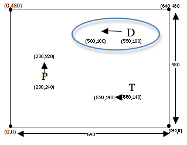

Students will add projectile movement to their games
Standards and Evidence Statements:
Standards with prefix BS are specific to Bootstrap; others are from the Common Core. Mouse over each standard to see its corresponding evidence statements. Our Standards Document shows which units cover each standard.
F-IF.1-3: The student uses function notation to describe, evaluate, and interpret functions in terms of domain and range
evaluation of functions using function notation for inputs in their domains
F-LE.5: The student interprets expressions for functions in terms of the situations they model
interpretation of the parameters in a linear or exponential function in terms of a context
BS-DR.2: The student can derive test cases for a given contract and purpose statement
given a Contract and a Purpose Statement, write multiple examples or test cases
given multiple examples, identify patterns in order to label and name the variables
BS-DR.3: Given multiple test cases, the student can define a function
given examples and labeled variable(s), define the function
BS-IDE: The student is familiar with using a REPL, entering expressions properly, and interpreting error messages
look to error messages as a way of diagnosing syntax errors
BS-PL.1: The student is familiar with declaring values and applying built-in functions using the programming language
interpreting a function application and identifying its arguments
BS-PL.2: The student is comfortable using and writing Contracts for built-in functions
representing a function’s input and output using a contract
using a function by refering to its contract
BS-PL.3: The student is able to use the syntax of the programming language to define values and functions
defining and using functions
Length: 70 Minutes
Glossary:
contract: a statement of the name, domain, and range of a function
example: shows the use of a function on specific inputs and the computation the function should perform on those inputs
purpose statement: a brief description of what a function does
variable: something that changes
Materials:
Computer for each student (or pair), running WeScheme or DrRacket with the bootstrap-teachpack installed
Bug HuntingDebugging (finding and correcting problems in code) is an important part of programming, so it’s a good idea to practice finding bugs in code.
Open the Bug Hunting program in a new window, and see if you can find the
bug in each expression. Click "Run" and read the error message carefully! After you fix each one, clicking
Run will show you the error message for the next bug.
Make sure students read the comments in the code FIRST, before trying to fix the bug.
Danger and Target Movement
Overview
Students model animation in the coordinate plane, and write a simple linear function that animates their Danger.
Learning Objectives
Students learn to move game elements through functions that compute attributes in one frame from attributes in the previous frame
Evidence Statementes
Students will be able to write functions that take in one dimension of a game element’s coordinate and produce the next coordinate value in that dimension
Students will learn how to control speed of movement through functions
Product Outcomes
Students will add danger movement to their games
Students will add target movement to their games
Materials
Danger and Target Movement(Time 30 minutes)
Danger and Target MovementThe dimensions of your videogame are 640x480, and each character is placed on the screen at a set of (x,y) coordinates. Your Target (T), Player (P) and Danger (D) each move along the x- or y-axis, having their x- or y-coordinate changed according to an animation function. These animation functions will start off simple: they take in the current x- or y-coordinate, and produce the next x- or y-coordinate. Later on you’ll be able to adapt them to create more sophisticated motion, using both the x- and y-coordinates.
Turn to Page 48 in your workbook for update-danger.
Read the word problem carefully, and pay attention to what the function takes in.
Fill out the Contract and Purpose Statement for the function, using what you circled to help you choose the Domain.
Write two Examples for the function.
Circle and label what varies between those examples, and label it with a variable name.
Define the function.
If students are working on their own, check their work to make sure every last step is being executed correctly. If the class is working through it together, be sure to ask students to justify each step in terms of a prior step.
Tip: tell students that they must get your permission before typing in their code, then use that expectation to check each student’s paper carefully.
Putting all of these together, update-danger is defined by:
(Note: you may have slightly different Examples or variable names.)
Open your saved Game file and scroll until you find the definition for update-danger. Is the contract correct?
Make sure it matches what you have in your workbook, add both of your examples, and fix the definition. When you
click "Run" you should see your danger fly across the screen!
Now it’s time to animate the Target, which moves in the opposite direction.
Turn to Page 49 in your workbook for update-target.
Read the word problem carefully, and pay attention to what the function takes in.
Fill out the Contract and Purpose Statement for the function, using what you circled to help you choose the Domain.
Write two Examples for the function.
Circle and label what varies between those examples, and label it with a variable name.
Define the function.
For students who finish these quickly, have them experiment with making the Target and Danger move faster or slower, or change direction altogether. Be sure that they are typing in Examples, and updating those examples to keep up with any changes to their definition.
Projectile Movement (Optional)
Overview
OPTIONAL: students discover that the "mystery" definitions in the game are actually used to add projectiles, and adapt these definitions to add a custom projectile and projectile animation to their game.
Learning Objectives
Students learn to move game elements through functions that compute attributes in one frame from attributes in the previous frame
Evidence Statementes
Students will be able to write functions that take in one dimension of a game element’s coordinate and produce the next coordinate value in that dimension
Product Outcomes
Students will add projectile movement to their games
Materials
Preparation
Projectile Movement (Optional)(Time 15 minutes)
Projectile Movement (Optional)This game template also has a mystery object, which is defined at the very bottom of the screen. The "mystery" is actually a projectile, which will be set to the Player’s position whenever the spacebar is pressed. As you can see, mystery is defined to be a small gray star, but you can change that to be any image you like. If you have a game in which the player is a monkey, you could change the definition of mystery to be a bitmap of a banana, so that the monkey will throw bananas every time you hit the spacebar. A game that takes place in space could have an alien throwing crystals, or a sports game might involve an athlete throwing a ball.
Change the definition for mystery, so that your projectile looks the way you want it to. Don’t forget to use scale and rotate if you need to change the image slightly.
Use the Design Recipe to write update-mystery, so that the projectile moves to the left or right. Hint: this will be very similar to your solutions for update-danger and update-target!
Be careful when introducing Projectiles into the game! Many students will actually be less creative when using them, as it will automatically push their mindset towards the standards "shoot the bad guy" format. Many teachers choose to skip this section entirely, or else add it after the games are complete.
Closing
Overview
Learning Objectives
Evidence Statementes
Product Outcomes
Materials
Preparation
Closing(Time 5 minutes)
ClosingCongratulations - you’ve got the beginnings of a working game! However, several things remain unfinished:
The Player doesn’t move
When the Target and Danger move offscreen, they never come back
Nothing happens when the Player collides with the Danger or Target
The next few lessons will extend what you know about functions, so that you can define functions to implement each of these features.
Have students volunteer what they learned in this lesson
Reward behaviors that you value: teamwork, note-taking, engagement, etc